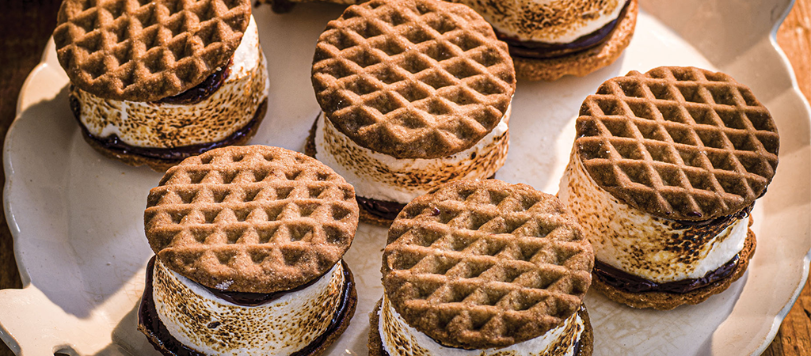

Paul Hollywood's S'mores

Description
In the 1920s in the USA, girl scouts on camp called for more melty, sandwiched marshmallow - 'Some more!'' - and s'mores were born. These digestive biscuits are treacly with brown sugar and the marshmallows fragrant with vanilla.
Ingredients
For the digestives:
- 170g wholemeal flour
- 2 tbsp wheatgerm
- 110g unsalted butter, chilled and cubed
- 75g light brown soft sugar
- 1/2 tsp baking powder
- 1 tsp salt
- about 4 tbsp whole milk
- plain flour, for dusting
For the marshmallow:
- 50g icing sugar
- 1 tbsp cornflour
- vegetable oil, for greasing
- 4 platinum-grade gelatin leaves
- 3 egg whites
- 3/4 tsp cream of tartar
- 125g caster sugar
- 175g corn syrup
- 2tsp vanilla paste
For the chocolate ganache:
- 100g 54% dark chocolate, finely chopped
- 100ml double cream
Method
- Make the digestives. Tip the flour and wheatgerm into a food processor and blitz to a fine flour. Add the butter, sugar, baking powder and salt and blitz unti the mixture resembles fine breadcrumbs. Add the milk a little at a time and pulse to form a dough (you may not need all the milk). Turn out the dough onto the work suface and shape it into a flat disc. Wrap and chill the disc for 20 minutes.
- Make the marshmallow. While the dough is chilling, in a small bowl mix together the icing sugar and cornflour. Oil the baking paper in the prepared tin, then dust it with half of the icing sugar mixture so that you coat the paper.
- Soak the gelatin leaves ina bowl of cold water for 5 minutes, until soft. Place the egg whites and cream of tartar in the bowl of a stand mixer fitted with the whisk and whisk to stiff peaks.
- Tip the sugar and corn syrup into a clean saucepan and place the pan over a medium-high heat. Bring the micture to the boil and boil until the temperature on the sugar thermometer reaches 115°C/ 239°F. Immediately remove the pan from the heat and, with the whisk on low, pour the hot sugar down the inside of the bowl into the egg whites. Increase the speed to medium and whisk for 3 minutes to a thick, warm meringue.
- Drain the gelatin, squeezing out any excess, then roughly chop it into small pieces. Add a few pieces at a time to the meringue, whisking between each addition, until all the gelatin has melted into the meringue and the marshmallow is stiff. Whist in the vanilla, then scrape the marshmallow into the lined tin, level the surface and leave the marshmallow to set at room temperature for 1.5 hours.
- Make the chocolate ganache. While the marshmallow is setting, tip the chocolate into a small bowl. Heat the cream in a small saucepan over a low-medium heat until just simmering, then immediately remove the pan from the heat and pour the cream over the chocolate. Leave the ganache to cool for about 45-60 minutes, depending on the temperature of your kitchen, until it reaches a piping consistency, then spoon the ganache into the piping bag fitted with the medium nozzle. Set aside at room temperature until you're ready to use.
- Finish the digestive biscuits. Roll out the disc of chilled dough on a lightly floured surface to 3mm thick. Using the 5cm cutter, stamp out 16 discs re-rolling and stamping the trimmings as necessary. Lightly flour the biscuit stamp )if using) with plain flour, then stamp each disc to create a pattern. This will cause the discs to spread a little as you press down, so re-cut them using the cutter to neaten as necessary.
- Place the 16 discs on the lined baking sheet and chill them for 20 minutes, while you heat the oven to 190°C/170°C fan/375°F/Gas 5. Bake the biscuits for 15-20 minutes, until the edges start to turn a dark golden colour. Leave the biscuits to cool on the baking sheets for 5 minutes, then transfer them to a wire rack to cool completely.
- Assemble the s'mores. Turn all 16 biscuits so that the flat base (underside) is upwards. Pipe an even layer of the chocolate ganache onto each one.
- Lay a sheet of baking paper on the work surface and sprinkle the remaining icing sugar mixture over it. Turn out the marshmallow onto the paper and, using the 5cm plain cutter again, cut out 8 rounds of marshmallow (discard the trimmings). Place one round on top of the ganache layer on 8 of the biscuits, then sandwich the marshmallow using the remaining biscuits, ganache-side downwards.
- Immediately before serving, use the kitchen blowtorch to toast the marshmallow edges until golden brown and a bit gooey.